Fashion is an aspect of life which has the capability to enchant us and through its sorcery we all get hooked up for life. Fashion is so soothing and thrilling to eyes that we want to become an active part of it. We want to create, implement, pursue various fashion trends.
Fashion is very powerful. It provides an attribute which most people lag and that is self-confidence. The self-confidence mutates into trust and dreams becoming a personal harbinger of success for the person concerned.
Fashion updates, tips and tricks, styling techniques, etc. are the small elements which make a huge impact on the whole fashion landscape. Netizens constantly search for these and their search ends with fashion Instagrammers.
Fashion Influencers on Instagram are opinion and subject matter experts of fashion. They curate various content where they provide necessary skills building fashion tips and tricks to their followers. Moreover, they utilize their own skill and showcase their creativity with different posts, live chats, reels, etc.
Top fashion influencers in India have weaved their relationship with their followers very intricately and due to this they have opened a potential avenue for influencer to do marketing for brands. Brands are actively recruiting top fashion Instagrammers in India to talk about their product and services. Moreover, fashion is one of the most dominating niches on the internet in 2024, the fashion segment is expected to generate US$19.69 billion in revenue as per Statista opening a big area where brands can gain profit from. However, to collaborate with the ideal influencer, make the perfect script, shoot in the perfect setting, and monitor it, etc. you need experts on your side.
This is where our video production agency comes into play which help you gain amazing ROI / reach your objective. We create fashion influencer-based videos featuring the top fashion influencers promoting your product or service.
We create fashion influencer-based video Ads, website videos, Demo videos, product explainer videos, social media organic videos and much more to increase engagement, ROI, ROAS and sales.
Each element of the process is handled by our video professionals and the content can be posted on your social media or different platforms as posts or ads. Let us deep dive into who they actually are?
Contents
- 1. Diipa Khosla
- 2. Komal Pandey
- 3. Kritika Khurana
- 4. Aashna Shroff
- 5. Sejal Kumar
- 6. Santoshi Shetty
- 7. Karron S Dhinggra
- 8. Roshni Bhatia
- 9. Juhi Godambe
- 10. Sakshi Sindwani
Who are Fashion Influencers?
Fashion influencers are passionate individual of fashion domain. They are attributed for their content which revolves around sub-domains of fashion. They create content related to tips/tricks of clothing, footwear, hairstyles, jewelry, accessories, etc.
Fashion influencers are also opinion leaders and trendsetters of their respective arena. They create various new looks through experimentation and share it with their followers. They provide styling tips, clothing styles, matching and consistent accessories, and many more. Now, let’s explore their types!
Types of Fashion Influencers
1.Clothing Fashion Influencers:
These influencers create various looks through various clothing. They create unique styles which holds the capability to go viral.
2.Fashion Accessories:
Fashion accessories helps in extrapolating the entire look and bolster the confidence to higher scale. Accessories play vital role in polishing and these influencers suggests about the entire horizon of actionable styles through accessories.
3.Tips and Hacks:
Minor changes can have great impact. This is what these tips and hacks fashion influencers believe in. through their tried and tested tips and tricks they curate content helping the followers to solve various fashion milestones and beautify the overall personas.
4.Reviewing Fashion Influencers:
Everyday various clothes, footwears, accessories, and more are launched. Being huge in quantity it becomes nearly inaccessible for the followers to test each item. These reviewing fashion influencers does review on behalf of the followers for their easy accessibility to quality products.
Let’s see the list of top fashion Instagram influencers who are leaving no competition and making a change with their content that you can get.
Here’s The List of Top Fashion Influencers in India on Instagram in 2024
-
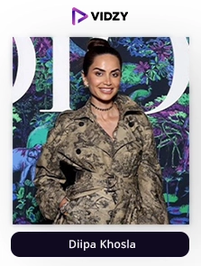
1) Diipa Khosla
Instagram Profile: diipakhosla
USP:
One of the most successful fashion influencers who spreads her impeccable knowledge consistently with her audience.
One of the top fashion influencers who achieved international success is Diipa. She currently has more than a million Instagram followers and has been featured on the covers of seven foreign magazines. She was named 9Influencer of the Year by Grazia, Elle, and Vogue three years in a row.
Diipa is the one of those people who truly deserves to be at the top because she has fulfilled her life's ambitions by playing the part she has chosen. She asserts that "I would much rather be referred to as a new-age digital celebrity" and adds that "You can only be an influencer if you have managed to influence people so much that it has led to some kind of a social change." You must follow Diipa if you want to get real inspiration or if you want to become a fashion influencer.
-
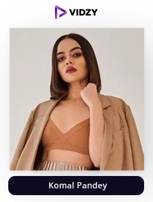
2) Komal Pandey
Instagram Profile: komalpandeyofficial
USP:
She will help you style extremely well even on a tight budget.
With more than 1.9 Million followers, Komal Pandey is unquestionably the biggest fashion icon or top fashion Instagrammers in India for youth. She is well-known because she is relatable to all Indian women who want to look good on a tight budget. Her bio states that the focus of both her YouTube channel and Instagram account is on experimental yet approachable fashion. Komal adopts a style that is appropriate for every other girl that is sensible, elegant, and sassy. Instead of boasting about some Louis Vuitton designs, she would show you how to make a lehenga from a saree.
This uniqueness in her approach is the reason why she stands out from the competition and gets an amazing engagement rate. All of her reels reach the million club easily and are filled with comments of adoration. If you are someone who is looking for fashion inspiration, recommendations, and tips, this account is for you!
-
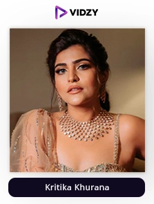
3) Kritika Khurana
Instagram: thatbohogirl
USP:
She is extremely thorough with the world of influencing and fashion making her a figure of authority.
With 1.7 million followers, the Delhi-based fashion influencer is also referred to as the boho girl. Her eclectic wardrobe, embroidered bags, and vintage silver jewellery are perfect examples of how to pull off an indie fusion look. When she puts them on, it appears to be made especially for her! Most of the people learned about the inner workings of the fashion industry from her video on "What it's like attending a fashion week"! She has the potential to motivate people to take ownership of their clothing.
Her amazing personality and communication skills help her form a great level of connection with her audience along with her knowledge which sets her apart from the competition and always wins awards when it comes to fashion. Make sure you follow one of the finest or top fashion influencers.
-
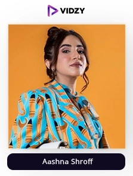
4) Aashna Shroff
Instagram Profile: aashnashroff
USP:
Her unparalleled fashion knowledge and great personality keeps her at the top when it comes to dominating the fashion field.
Aashna Shroff is a well-known social media personality recognized for her fashion content and YouTube talents. She started "The Snob Shop" online store after earning a fashion degree at the London College of Fashion. The finest thing about her content is that she can look good in any kind of clothing and blend in best when she smiles a little. She is the ideal inspiration for people who are interested in improving their fashion content, from endorsing skincare goods to setting lifestyle objectives.
She admitted in an interview that she was shy at the beginning of her career but that her social media posts helped her gain confidence. On TEDx, she shared many inspiring details about her life and work as an Indian fashion influencer. Make sure you follow her content if you are interested in fashion!
-
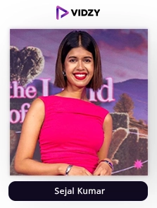
5) Sejal Kumar
Instagram Profile: sejalkumar1195
USP:
A fun-loving personality who will make learning about fashion interesting for you!
Sejal Kumar is another well-liked or one of the top fashion influencers in India. She primarily blogs about her daily life. She wears clothes that are appropriate for every teen and is regarded as the most realistic fashion blogger. She stands out from other influencers because of her quirkiness and innocence, which is why she just reached 880k Instagram followers with an engagement rate of 1.67%.
Her feed is filled with vibrant colours which will reflect a great and positive vibe. All of her reels have something different to offer and have over 100k views and a lot of comments. Make sure you follow her if you are inclined towards fashion!
-
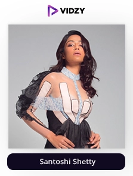
6) Santoshi Shetty
Instagram Profile: santoshishetty
USP:
She is consistent with her content and is always looking to upskill herself to give her audience a better experience.
Santoshi is among the most highly renowned fashion Instagrammers in India. Cosmopolitan and Elle, two of the most prestigious worldwide magazines, awarded him Blogger of the Year. Although Santoshi is most known for her fashion blog, The Style Edge, she also writes on lifestyle topics with a focus on fitness. She enjoys reading blogs on fashion that encourage readers to embrace other viewpoints to make her content better.
Her favourite colour is black, but just like one of the most important characteristics of a fashion influencer, she is not afraid to try any colour and outfit that suits her personality and mood to inspire her audience. Make sure you follow her!
-
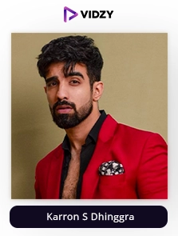
7) Karron S Dhinggra
Instagram Profile: theformaledit
USP:
He will make your fashion game up a notch with his advices.
Karron S. Dhinggra must be included when talking about the most significant male fashion bloggers in India because of his sense of style and edgy appearance, which can be used as an example of everyday attire.
He can assist you in creating any style, from informal to formal, and everything in between. He has mastered experimentation, which is one of the reasons we are so enamored of his sense of style.
He started out as a corporate lawyer, but he has since made the switch to a full-time career as a fashion stylist due to his passion and now Karron is one of the top fashion Instagram influencers in India. Make sure you give him a follow!
-
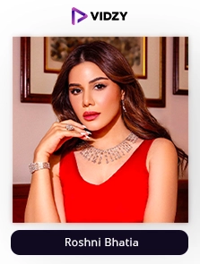
8) Roshni Bhatia
Instagram Profile: thechiquefactor
USP:
She makes fashion extremely easy for you with her tips and recommendations.
Roshni is renowned for her casual elegance. She is not one of those people who spend hours grooming and then looking good. She always looks cool because of the ideal fusion of beauty and refreshment.
This Delhi-born influencer, rose to fame thanks to her YouTube channel. She quickly became well-known for her fashion and beauty content in addition to her beauty blogging product reviews and makeup tutorial videos. She hopes to continue inspiring women to be innately beautiful with her 580k followers.
She has an engagement rate of 4.00% and all her reels cross 100K views easily as she is always looking to deliver something valuable and different from others. Make sure you check out the content of one of the top fashion influencers in India!
-
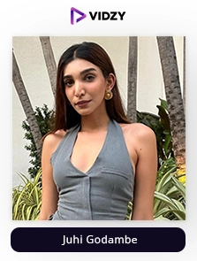
9) Juhi Godambe
Instagram Profile: juhigodambe
USP:
One of the most passionate fashion influencers who always brings something unique to her audience.
Juhi, who is inspired by vintage fashion, combines stylish and modern clothing with just the right amount of retro charm. Think flowing shapes, defined waistlines, and styles with corset influences. The creator of Arabella, she serves as the ideal model for the incredibly feminine, romantic aesthetic. She faces a daily challenge of juggling her entrepreneurial roles and obligations as an influencer but turns out to do it perfectly all because of her passion and desire to make a change.
This is the reason she has a following of 539K and an engagement rate of 1.10% making her one of the top fashion influencers. Her feed is filled with posts and videos that are aesthetic and filled with fashion inspiration as she comes out with the best combinations or looks. Make sure you follow her!
-
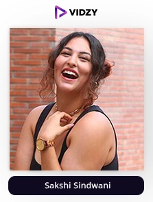
10) Sakshi Sindwani
Instagram Profile: stylemeupwithsakshi
USP:
She is one of those influencers who can make learning about fashion easy for you.
Sakshi is well-known in India as a plus-size fashion influencer who champions body positivity. She is well-known throughout the world as a body advocate and has appeared in numerous illustrious fashion publications, including Harper's Bazaar, Vogue, Cosmo, Grazia, and others. She is primarily well-known for her fashion and fashion-related YouTube videos. She is a true role model for all plus-sized women who are self-conscious about their bodies and reluctant to try new clothing.
Her original styling suggestions will greatly inspire you to give them a try. For her, fashion is what makes you feel like yourself, regardless of your body type. She has begun changing many people's lives through her YouTube content, and she enjoys sharing the happiness by interacting with others. If you want to engage your audience with your content and win them over or just want to gain inspiration, she is one of the best fashion Instagrammers to follow.
-
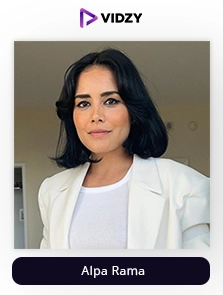
11) Alpa Rama
Instagram Profile: alpa.rama
USP:
She brings Indian flavors to western fashion in the most unique way.
Alpa Rama is a true Parisian- Indian goddess! She modestly responded, "Minimalist, chic, and classic" when asked to sum up her sense of style in three words, but we see much more—an effortless transitional fashion sense that is both foreign and recognizable. The creator and brains behind A Parisian in America draw inspiration from her upbringing in Paris, the American way of life (she currently resides in Florida), and her Eastern heritage.
She advises having fun with fashion while identifying (and adhering to) your likes, organizing your closet, accordingly, donating the items you don't like (because let's face it, you're never going to wear them), and spending money on accessories to style your must-keep clothes in a variety of ways making her one of the most knowledgeable fashion Instagrammers to follow!
-
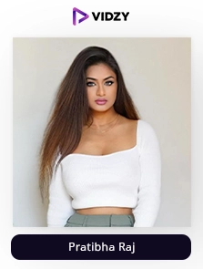
12) Pratibha Raj
Instagram Profile: the_vogue_driven
USP:
Pratibha is always looking to get better for her audience which makes her unstoppable.
Meet Pratibha Raj, a stunning fashionista or one of the top fashion Instagram influencers in India who is already winning over hearts with her stunning persona and amazing fashion tricks. She is a kind-hearted fashion icon who never fails to inspire her followers with some major style goals. Her vibrant picture will persuade you to scroll further down to her page by providing some significant fashion updates. Being one of the well-known figures in the blogging world, her blogs are all about her travel and fashion experiences, which are illustrated with interesting photos. You must visit her Instagram page if you want some style inspiration!
She has always had a positive outlook on life and always seeks to spread that with her content apart from knowledge. This is the reason she has over 100k views on all her reels. Make sure you follow her!
-
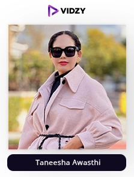
13) Taneesha Awasthi
Instagram Profile: taneshaawasthi
USP:
She is one of the most consistent fashion influencers who brings up valuable knowledge combining content making her one of the top in the field.
Another distinctive or one of the top fashion influencers who emphasizes body positivity is Tanesha. Her perfectly coiffed hair makes her stand out in the crowd. She has successfully run the fashion blog "Curve with girls" and is a part of the "curvy blog" movement, which aims to normalize self-acceptance and body positivity, in addition to running one of the most popular Instagram accounts.
She has been a favorite of many since 2011 due to her work as a fashion consultant and stylist. She currently has more than 481 k followers and an engagement rate of 0.57% with all of her reels getting over 100k views and is trending on almost all Instagram influencer pages! Make sure you follow her content if you are inclined towards fashion!
-
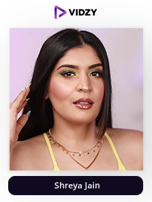
14) Shreya Jain
Instagram Profile: shreyajain26
USP:
She provides content that will use in your everyday life making a lot of impact.
She is renowned for her originality and year-round fan entertainment. Most of her high-quality content focuses on makeup tutorials and bridging the gap between realistic appearances and current beauty standards.
Even outside of the fashion industry, Shreya has 457 k followers and an engagement rate of 1.67% and knows how to be at the edge of everyone's heart due to which she gets an amazing number of views on all of her reels. You can always feel like the most stunning woman in the world when you're following her! She is also the founder of SJ merch which has a range of cool quirky and upbeat merchandise that is getting amazing responses due to her in-depth knowledge. Make sure you follow one of the top fashion influencers!
-
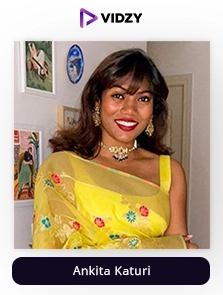
15) Ankita Katuri
Instagram Profile: kitakaturi
USP:
Her knowledge of fashion helps her post great content consistently bringing in a lot of audience in her pool.
She is one of the top Fashion influencers who truly represents Indian culture and is a classic woman with a distinct aesthetic sense of styling, setting her apart from regular street style bloggers. She is also known as the style icon. A black and white outfit can be perfectly pulled off by the mistress of white clothing and silver jewelry.
With 197k followers and a solid engagement rate that is growing, the Instagram profile resembles a digital album. She excels at donning exquisite jewelry and saris that are representative of Indian culture. She won't say no to a more contemporary outfit, though, as she would still look lovely.
-
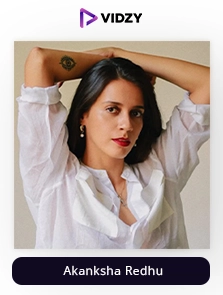
16) Akanksha Redhu
Instagram Profile: akanksharedhu
USP:
She will make you fall in love with fashion with her interesting content.
Since she began blogging in 2010, Akanksha Redhu has gained a devoted following of fashion enthusiasts and has amassed over 167k followers on Instagram alone. We noticed an underlying theme in her style as we looked through her blog and social media accounts: eclectic beauty! This fashionista with an ombre bob chooses striking prints, deep jewel tones, and chic details to counterbalance her vibrant South Asian flair.
Her blog and feed encourage creating outfits that combine daring urban street style with feminine charm. For instance, she might match a cool bomber jacket with chandelier earrings and a bejewelled clutch or a silk dress with platform hippie-style boots. The most intriguing aspects of Akanksha's personality are expertly and thoughtfully incorporated into her style. Make sure you follow the content of one of the top fashion Instagram influencers for some amazing recommendations or tips and inspiration!
-
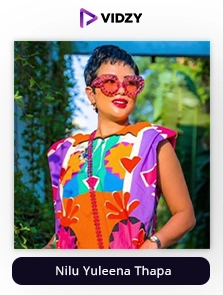
17) Nilu Yuleena Thapa
Instagram Profile: bighairloudmouth
USP:
One of the most confident influencers who will make you an expert in fashion with her knowledge.
The Northeastern fashion blogger, who is renowned for expressing herself through her clothing, is one of the top fashion Instagram influencers. She has previously rocked the fashion industry with the brightest hair colours, including fiery pink, blue, purple, and orange. Despite having spent the majority of her life in Bengaluru, this woman still embodies the most elegant version of her hometown's fashion sense.
She wants to inspire people to mix and match a variety of outfits and not always wear what's in style. She is a firm believer in starting trends where her heart is. She even drew the attention of numerous fashion houses, including the opulent European brand Dior, and collaborated with them to produce amazing looks, showcasing them to her 120k followers.
-
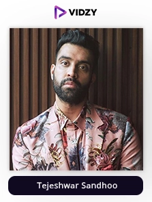
18) Tejeshwar Sandhoo
Instagram Profile: blueberryblackout
USP:
He brings uniqueness and aesthetically pleasing with each of his content
When Sandhoo was tasked with finding a male fashion influencer for a task, he had the idea for Blueberry Blackout. The fact that there weren't many of these people surprised Sandhoo. His journey officially began at that place.
At the age of 16, Sandhoo told his family for the first time about his sexual orientation after years of being bullied for being gay. The person who has supported him the most throughout his life has been his sister.
He often thinks fondly of her because she has always been there for him. Being an outspoken member of the LGBTQ community, Sandhoo was motivated to use fashion as a vehicle for disobedience. According to him, fashion and sexuality are two sides of the same coin. He was also given consideration for the Cosmopolitan award.
You need Tejeshwar Sandhoo's clothing if you want to completely overhaul your wardrobe. He has without a doubt nailed every look featured on his feed. The point is to experiment. Your mind will be blown by his Instagram feed, and we are in awe of his incredible sense of fashion. Follow one of the top fashion influencers to get the most recent takeout that appears to be suitable in almost any circumstance.
-
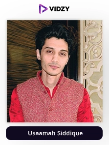
19) Usaamah Siddique
Instagram Profile: usaamahsiddique
USP:
One of the most stylish influencers having a passion to make a change with his fashion knowledge.
The founder of The Dapper Label, Usaamah Siddique, has really grabbed our attention from the outset with the way he is reinventing fashion for Indian men. His blog is a huge source of inspiration for anyone looking to up their style game.
He does this frequently and offers takeaway looks, outfit suggestions, and accessorising guidance. He's one of India's most prominent men's fashion bloggers, so it would be beneficial if you didn't skip over following him. His posts about food and travel are a welcome addition.
His regular posts focus exclusively on accessorising and putting together outfits. In addition, he posts images from his travels and describes his culinary adventures. Anyone can use his unconventional and straightforward fashion advice in their daily life making him one of the finest or top fashion influencers out there! Make sure you follow him!
-
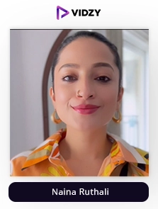
20) Naina Ruthali
Instagram Profile: nainaruhail
USP:
She makes all of the tricks of the fashion trade easy for you!
She began promoting clean beauty and great fashion after earning her degree from the styling school in London. She encourages her followers to use vegan and cruelty-free products by using organic skincare items. She is one of India's few beauty and fashion bloggers because people value her sincere and honest product reviews. She also founded vanity waggon, an e-commerce site that sells organic skin products to have healthy, glowing skin, with 35.5k followers and a rising interaction rate.
Her feed is filled with valuable content consistently which helps her bring a lot of likes and comments. Moreover, her reels do extremely well as she is gaining authority in the field of fashion and is among the most liked fashion influencers when it comes to brands looking for collaboration. Make sure you follow one of the top fashion Instagram influencers in India!
To Sum Up
The fashion industry has benefited the most from Instagram among any B2C industry, especially in India. Instagram has provided fashion brands and designers with unmatched opportunities thanks to its audience's willingness to scroll and shop.
If you want to tap into this area of huge profits and unparalleled growth or compete with the ever-increasing competition which is going to be the norm as over 300 international brands are planning to open their stores here in the next 2 years as per McKinsey, who will all be trying to gain maximum benefit from influencer marketing, get in touch with the best video production agency in India - Vidzy now!